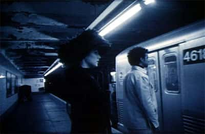

cast and crew

Gary (Orpheus) and Trish (Eurydice) and the subway train.
Being a first time director and not knowing many actors at the time, I decided to cast two first time actors and good friends who I felt fit the roles and were interested in acting. They are Gary French and Trish Nagy a couple who have natural chemistry.
My crew consisted of classmates from the New School and my friends:
- Jane Watson was the cinematographer
- Takaki Kawamura was the cameraman
- Greg Sciullo was the soundman, location sound, set DJ, and composer
- Eyal Ben-Zwi created and projected the 'video set'
- Lizzy McGlynn fulfilled many roles: production assistant, craft services, security, and special effects assistant.
- Consuelo Bellini did the makeup
- Darren Foster was a production assistant and script consultant
- Emmet Wafer was also a production assistant.